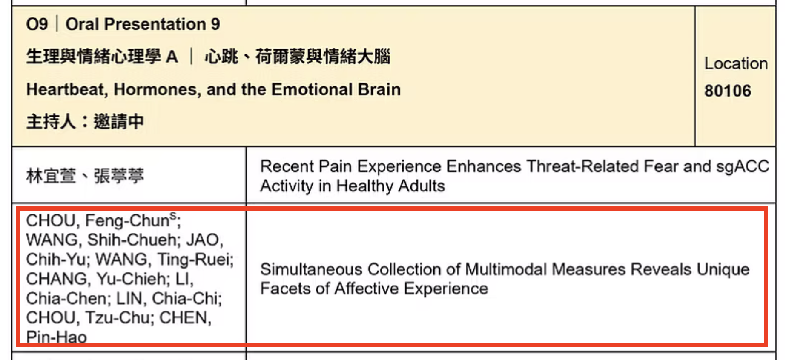
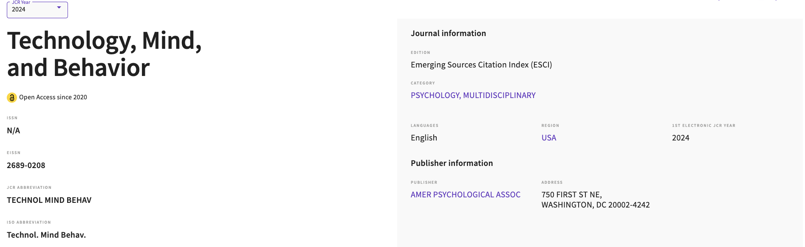

ICML Workshop
In-person Poster
Tracing Psychometric Inference in Large Language Models accepted to an ICML mechanistic interpretability workshop
Posted on July 8, 2026
Our work on tracing psychometric inference in large language models was accepted as an
in-person poster at an ICML workshop on mechanistic interpretability. The workshop received
more than 800 submissions, and the in-person poster selection placed the work in roughly the
top 20% of submissions.
- Format
- In-person poster
- Topic
- Psychometrics, LLMs, interpretability
Publication
Published
Rethinking acculturation: placing social interaction at the center of cultural adaptation
Posted on October 29, 2025
This paper was published in Social and Personality Psychology Compass.
It argues that social interaction should be treated as a central mechanism in cultural adaptation.
- Journal
- Social and Personality Psychology Compass
- DOI
- 10.1111/spc3.70099

Conference
Oral Presentation
TPA 2025 Conference Talk
Posted on September 20, 2025
I will present work on simultaneous collection of multimodal measures and how facial
expressions and self-reports can reveal distinct facets of affective experience.

Publication
Milestone
Technology, Mind, and Behavior earns Q1 rank in Psychology, Multidisciplinary
Posted on June 26, 2025
Technology, Mind, and Behavior, where I published my first first-author
paper, received a Q1 ranking in its first Journal Citation Reports year.